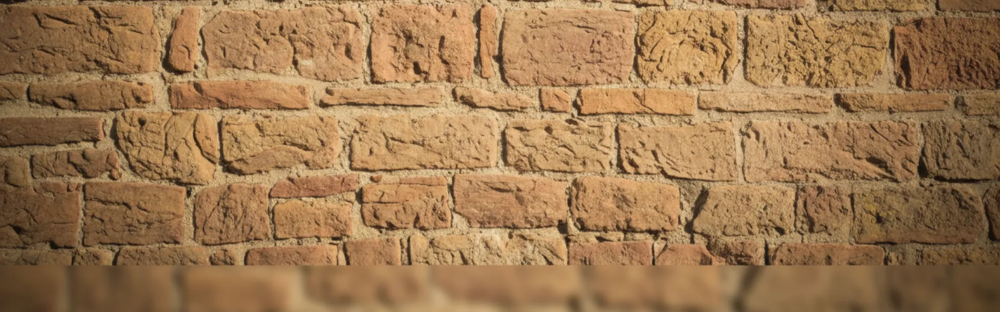
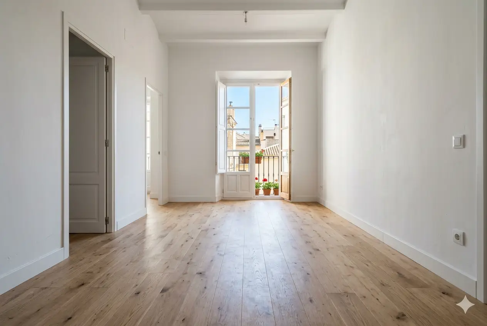
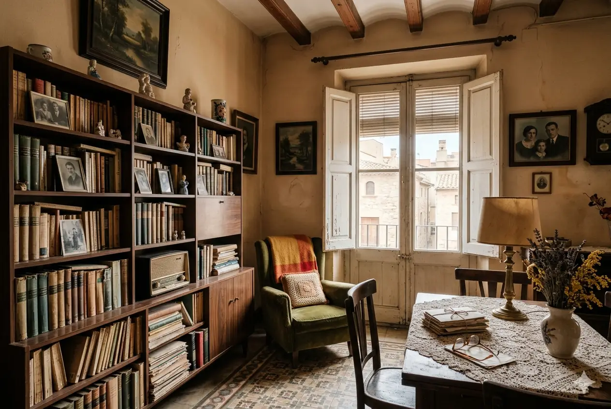
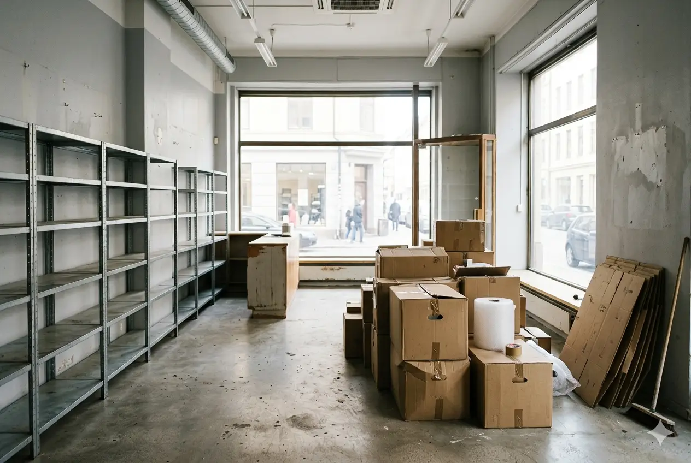

Terrassa · Vallès Occidental
Vaciado de pisos y locales en Terrassa
Expertos en el vaciado de pisos en Terrassa y en toda la comarca del Vallès Occidental. Servicio integral para viviendas, naves y locales comerciales, con máxima discreción y precio cerrado.
Servicio especializado
Conocemos Terrassa y la diversidad de sus viviendas
Terrassa es una ciudad con una mezcla única de viviendas antiguas, pisos amplios de los años 70, casas adosadas y edificios modernos. Cada tipo de inmueble requiere una planificación distinta, y por eso adaptamos nuestro servicio a las características de cada barrio.
Terrassa tiene una red de servicios municipales muy bien organizada, lo que nos permite gestionar residuos, voluminosos y materiales especiales de forma rápida y totalmente regulada. El cliente no tiene que preocuparse por nada: ni permisos, ni desplazamientos, ni trámites.

Terrassa
Servicios
Servicios especializados en Terrassa
Soluciones adaptadas a las necesidades de Terrassa, con especial atención a locales comerciales y situaciones que requieren máxima discreción.
Vaciado por defunción en Terrassa
Gestión sensible y discreta en momentos difíciles. Protocolos especiales para mantener la privacidad en toda Terrassa, con total respeto hacia la familia.
Leer guía completaLocales comerciales y oficinas
Vaciado rápido de locales y oficinas en Terrassa. Trabajamos en horarios flexibles —incluyendo nocturnos y fines de semana— para minimizar la interrupción de su negocio.
Saber másNaves industriales
Vaciado eficiente de naves y almacenes en Terrassa. Equipos especializados para grandes volúmenes y espacios industriales. Gestión completa de residuos industriales.
Saber másVaciado urgente 24h
Servicio de emergencia disponible las 24 horas. Ideal para desahucios urgentes, cambios de inquilino inmediatos o situaciones imprevistas en cualquier punto de Terrassa.
Saber másLimpieza por síndrome de Diógenes
Casos de acumulación severa atendidos con discreción y sin juzgar. Servicio completo con limpieza profunda, desinfección y retirada de objetos insalubres según normativa.
Ver protocolo de limpieza DiógenesServicio para inmobiliarias
Soluciones profesionales para agencias inmobiliarias en Terrassa. Tarifas especiales, rapidez garantizada y coordinación perfecta para que la propiedad quede lista para visitas.
Saber másCasos habituales
Lo que encontramos habitualmente en Terrassa
En Terrassa nos encontramos con situaciones muy variadas. Algunos clientes necesitan vaciar un piso heredado que lleva años cerrado; otros requieren una intervención urgente por un cambio de inquilino o una reforma.
En locales comerciales y oficinas, trabajamos fuera del horario laboral para no interrumpir la actividad del negocio. Terrassa es una ciudad con mucho movimiento empresarial, y sabemos que cada minuto cuenta cuando un comercio necesita reorganizarse o liberar espacio.
También son frecuentes los casos de acumulación severa, donde actuamos con discreción absoluta, ofreciendo un servicio completo que incluye limpieza profunda y retirada de objetos insalubres.


Cobertura
Trabajamos en toda Terrassa y el Vallès Occidental
Centro histórico, barrios residenciales, polígonos industriales. Conocemos las particularidades de cada zona.
Centro Histórico Zona con calles estrechas y restricciones de tráfico. Coordinamos con el Ajuntament de Terrassa para permisos especiales de carga y descarga, y trabajamos con horarios muy concretos para evitar molestias a los vecinos.
Ca n'Aurell y Sant Pere Nord Áreas residenciales con comunidades organizadas. Respetamos los horarios de silencio, coordinamos con los administradores de fincas y disponemos de más aparcamiento para realizar vaciados completos con mayor comodidad.
Les Arenes y Pla del Bon Aire Barrios modernos con mejores accesos. Optimizamos los tiempos de trabajo para mayor eficiencia. Ideal para vaciados de viviendas amplias y mudanzas voluminosas.
Vallparadís y Can Palet Zonas con mezcla de edificios antiguos y construcción reciente. Adaptamos el equipo y los vehículos a las características de cada acceso.
La Maurina y Torre-sana Barrios residenciales consolidados. Experiencia en escaleras sin ascensor y comunidades con normas estrictas de horarios.
Polígonos industriales Cobertura completa en polígonos industriales de Terrassa para vaciado de naves, almacenes y locales. Vehículos de gran tonelaje disponibles.
🗑️ Deixalleries Terrassa
Puntos limpios municipales para residuos voluminosos.
ecoequip.terrassa.cat♻️ Recogida de muebles viejos
Servicio municipal de recogida de voluminosos en Terrassa.
Mobles i estris vells🏠 Donación de muebles
Cáritas Catalunya y entidades sociales para donación de enseres.
caritas.es/catalunyaCómo trabajamos
Proceso sencillo, sin sorpresas
Le explicamos paso a paso qué esperar en todo momento. Si además necesita limpieza, pintura o reparaciones, lo coordinamos todo con un solo equipo y un único presupuesto.
Contacto y valoración
Nos llama o rellena el formulario. En menos de 1 hora respondemos y acordamos una visita o videollamada para valorar el contenido y las condiciones de acceso.
Presupuesto cerrado
Le entregamos un presupuesto detallado y cerrado. Lo que firma es lo que paga, sin sorpresas ni letra pequeña. Incluye gestión de permisos si es necesario.
Ejecución del vaciado
Nuestro equipo se presenta el día acordado y trabaja de forma ordenada, respetando los horarios de la comunidad y las restricciones municipales de Terrassa.
Gestión de residuos y entrega
Clasificamos, reciclamos o eliminamos según normativa. Le entregamos certificados de gestión de residuos y la propiedad en el estado acordado.
Precios orientativos
Sin letra pequeña
Presupuesto cerrado y gratuito en menos de 24h. Para locales, oficinas y naves consulte según metraje y contenido.
Piso 50–60m² con muebles vacíos
Piso 50–60m² con muebles y enseres
Casos de acumulación severa, desde
* Precios orientativos. Presupuesto exacto tras visita o videollamada gratuita.
Nuestro compromiso con Terrassa
Llevamos años trabajando en Terrassa y conocemos perfectamente la ciudad, sus normativas y sus particularidades. Ya sea en un piso pequeño del centro, una casa en Matadepera o un local en el Polígon Industrial, garantizamos un vaciado profesional, seguro y respetuoso con el entorno.
Clientes satisfechos
Lo que dicen nuestros clientes en Terrassa
«Excelente servicio de vaciado en el centro histórico de Terrassa. Gestionaron todos los permisos de carga/descarga con el ayuntamiento y trabajaron de forma muy eficiente en calles estrechas. Totalmente recomendables.»
«Necesitaba vaciar un local comercial en Ca n'Aurell y fueron increíbles. Trabajaron en horario nocturno para no interrumpir mi negocio y dejaron todo impecable. Profesionales al 100%.»
«Vaciado por defunción en Les Arenes con máxima discreción. Fueron muy respetuosos y sensibles en un momento difícil. Todo solucionado en menos de 48 horas. Gracias por su profesionalidad.»
Preguntas frecuentes
Lo que nos preguntan sobre vaciados en Terrassa
Resolvemos las dudas más comunes sobre nuestros servicios en Terrassa y el Vallès Occidental.
En el centro histórico de Terrassa gestionamos permisos especiales con el ayuntamiento. Conocemos las restricciones horarias y las zonas de carga autorizadas, optimizando nuestros horarios para cumplir con la normativa municipal.
La discreción es una de nuestras prioridades. En situaciones delicadas como vaciados por defunción trabajamos con vehículos sin identificación, equipos discretos y horarios adaptados para preservar la privacidad de nuestros clientes en toda Terrassa.
Sí. Ofrecemos horarios flexibles para locales comerciales, incluyendo fines de semana y horarios nocturnos. Planificamos el trabajo por fases para minimizar la interrupción y permitir que su negocio en Terrassa siga funcionando con normalidad.
Sí. Nuestra ubicación nos permite responder rápidamente en Terrassa y en municipios como Sabadell, Rubí, Cerdanyola, Sant Cugat y todo el entorno del Vallès Occidental. Sin costes adicionales de desplazamiento en la mayor parte de la comarca.
Contacto
¿Necesita vaciar una propiedad en Terrassa?
Le respondemos en menos de 1 hora. Presupuesto cerrado, sin compromiso.
Contacto directo
Teléfono
688 30 41 43Horario
Lunes–Viernes: 8:00–20:00
Sábados: 9:00–14:00
Urgencias disponibles 24h
Zona de servicio
Terrassa y toda la comarca del Vallès Occidental.
Solicite su presupuesto gratuito
Rellene el formulario y le llamamos en menos de 1 hora con un presupuesto orientativo.
¿Necesita vaciar un piso, local o nave industrial en Terrassa?
Como expertos en vaciado en Terrassa, ofrecemos soluciones adaptadas a cada situación con máxima discreción y eficiencia. Cobertura completa en Terrassa y todo el Vallès Occidental.
Solicitar presupuesto ahora